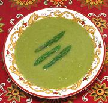

|
Asparagus SoupSpain - Sopa de Esparragos | ||||
| Makes: Effort: Sched: DoAhead: |
3 cups ** 1-1/8 hrs Yes |
Most Asparagus Soups are disappointing - this one is not. A substantial soup, it will serve 3 to 4 as a soup course, or two for a light lunch, with some bread and beer. | |||
|
|
10 5 2 3 2 2 tt ----- |
oz oz cl T t c --- |
Asparagus (1) Onion Garlic Manchego Cheese (2) Olive Oil ExtV Stock (3) Salt -- Garnish (4) |
Besides being tasty, this soup is low fat, low carb,vegetarian, and gluten free. It can be made ahead and reheated. Prep - (25 min)
|